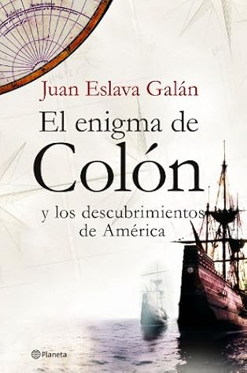

El enigma de Colón y el descubrimiento de América
Reseña por Jorge I. Zuluaga

Ver reseña en GoodReads (necesita cuenta)
Como siempre Juan Eslava nos transporta al corazón de la historia y de los debates de los académicos de la historia, a través de una prosa fluida y agradable (y en ocasiones humorística) creando el efecto increíble de mantener a un lector casual, posiblemente no académico, aferrado a las páginas de un libro de historia (que no son precisamente las más populares en la literatura de "entretenimiento".)
A través de sus páginas descubre uno que el asunto del encuentro de los Americanos originales con el resto de la humanidad, después de quedar aislados en esta "isla-continente" hace entre 13.000 y 14.000 años, no fue precisamente un asunto trivial y mucho menos uno que se pueda reducir a la historia de Colón y los reyes católicos en los 1.400.
Sin ser su objetivo, las historias recopiladas por Eslava en este libro sobre la llegada a América antes de Colón de europeos, africanos, hábiles navegantes del mediterraneo y hasta chinos (algunas fabricadas con pruebas falsas y otras simples deseos), me dejaron con la sensación de que es casi imposible que América haya estado aislada del resto del planeta, como parecen enseñarnos los libros escolares.
Después de leer este libro, podría apostar que más allá de los exploradores Irlandeses o Vikingos de principios del segundo milenio, cuya presencia en Norteamérica esta confirmada (al menos en el caso de estos últimos) por evidencia física de asentamientos, América fue seguramente visitada por Fenicios, navegantes Africanos, Polinesios y hasta Chinos (todos) en algún momento de esos 14.000 años.
Sería inconcebible que en un planeta conectado por corrientes marinas y por vientos y habitada por una especie curiosa y exploradora, creará las condiciones para aislar de forma tan radical los pobladores de América del resto del planeta. Es cierto que por las distancias y las dificultades en el transporte marino en la antigüedad, los encuentros no pudieron ser tan amplios como los que se produjeron en el resto del planeta. Pero también es cierto que la llegada por ejemplo de Fenicios a las islas del Caribe o la costa de Brasil sin la respectiva empresa a gran escala de colonización europea que caracterizo los viajes de Colón, es completamente viable y yo me atrevería a decir, inevitable.
Sobre Colón y su epopeya (y no me refiero a la de "descubrir" América, sino a la de convencer a alguien en España que financiara una aventura temeraria y peor aún de que lo acompañaran en esa) aprendí leyendo a Eslava cosas que nunca me enseñaron lamentablemente en la Escuela. Esto, a pesar que mis profesores y los autores de los libros de historia que leí, seguramente sabían lo que Eslava y todos los historiadores saben bien desde hace mucho.
Cayó para mí la imagen de ese Colón idealizado, marino temerario, visionario medieval que nos descubrió y trajo a América el cristianismo y la cultura grecorromana. Todo lo contrario. Colón fue un ser humano bastante imperfecto, arribista, vergonzante de sus orígenes humildes, (casi patológicamente) ambicioso, mentiroso (a más no poder), mal líder y administrador, esclavista, y megalómano. Parecen muchos adjetivos negativos (casi una venganza contra la endulcorada versión que le venden a los niños en las escuelas de toda hispanoamérica y España) pero la verdad sea dicha, describe a muchos contemporáneos suyos y naturalmente a políticos y exploradores también del presente.
Dos citas del libro me han llamado poderosamente la atención. La frase de Víctor Hugo "si Colón hubiese sido un buen cosmógrafo nunca hubiese descubierto América." Es una historia que se repite insistentemente: Colón subestimo significativamente el tamaño de la Tierra al punto que si América no hubiera estado en medio de su camino, él, los Pinzón y el centenar de hombres que lo acompañaron en 1492 (de los cuales hay que decir, como lo muestra Eslava, en realidad solo 3 o 4 eran bandidos y exconvictos, no todo el combo como nos lo han "vendido") jamás habría sobrevivido a la travesía. Lo que no nos cuentan (y vaya usted a saber si lo sabía Victor Hugo) era que Colón escondía el secreto sobre tierra a 700 leguas de islas Canarias. Es cierto que su idea de que esta tierra era Japón o China era completamente errada, pero también reconocer que no era tan tonto y que no habría emprendido un viaje con una gran incertidumbre en la distancia si no tuviera alguna certeza.
Y la segunda es de Quevedo: "nace en las indias honrado / donde el mundo lo acompaña, / viene a morir a España / y es en Génova enterrado." Y aunque parezca no se refiere a Colón, sino al dinero (o al oro) traído de América a Europa y la terrible administración que de él hizo el reino de Castilla.
Las reflexiones finales de Eslava sobre "Colón después de Colón" no pueden ser mas acertadas. No tienen razón los que han convertido a Colón en casi un santo (como lo intento el Vaticano en su momento), ni los que se esfuerzan por celebrar con emoción el "día de la raza" o el "Columbus day", celebrando aquellos venturosos tiempos cuando América fue "descubierta" por la superior Europa que trajo a nuestro continente la salvación y las letras. No. Pero tampoco lo tienen quienes reniegan del proceso, del encuentro entre estas dos culturas. O quienes pretenden minimizar la magnitud de los viajes de Colón y del proceso que iniciaron.
La verdad (si existe) está en algún lugar entre esos dos extremos.